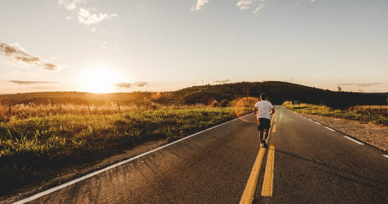
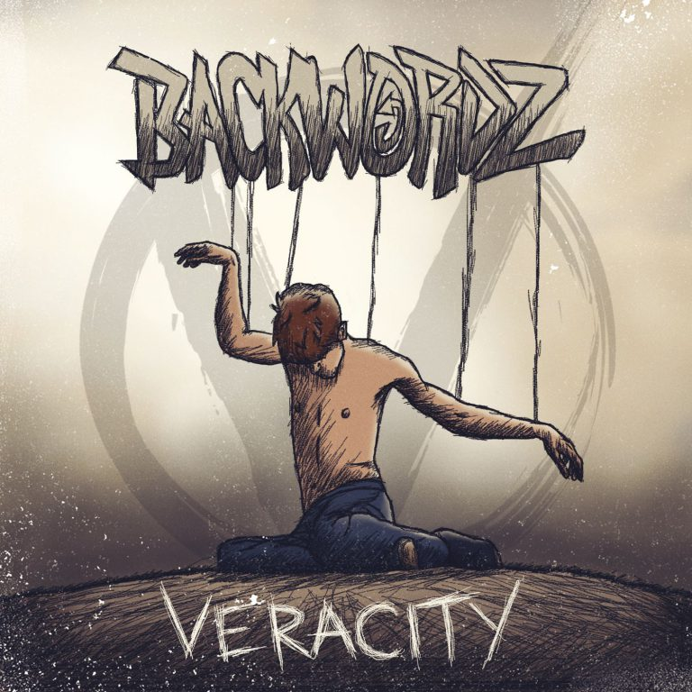
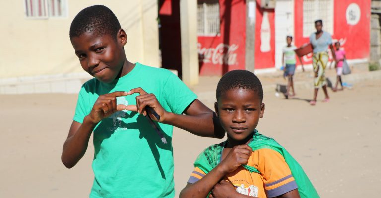
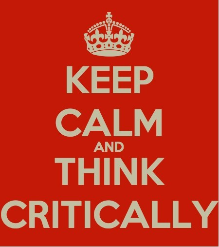

utenstat.no
utenstat.noKan vi skape et frivillig samfunn?
Bloggen er etablert for å få igang en diskusjon om moral, filosofi, politikk og frihet.

Kommer vi videre?
Nå har det vært over to år siden sist innlegg her på siden, og har vi kommet noe videre med mer frihet?
10. juni 2019

BackWordz – Veracity
BackWordz er et relativt nytt musikkband som produserer anarko-kapitalistisk hip hop/metal.
20. april 2017

Mennesket og intelligens
Mennesket er et fantastisk dyr, og vi har en enorm kapasitet for intelligens.
20. november 2016

Kritisk tenkning
Kritisk tenkning er ikke noe som kommer naturlig, man må jobbe og forbruke energi for å opprettholde det kritiske tankesettet.
12. november 2016